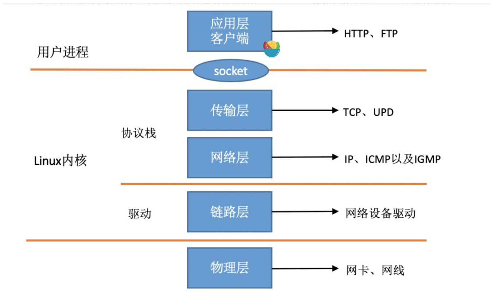
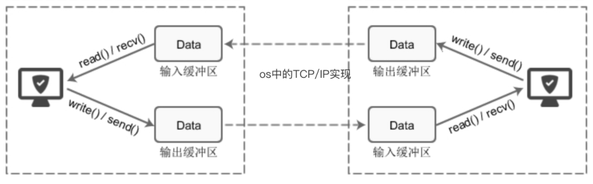
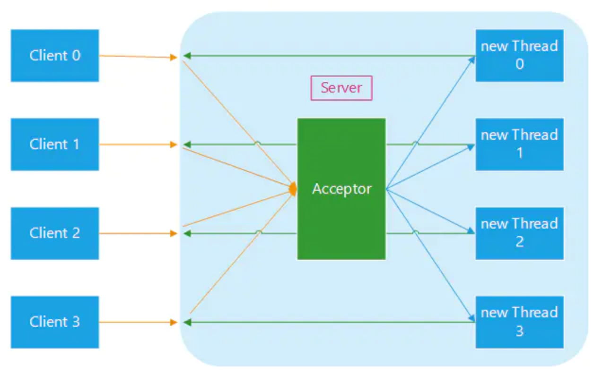
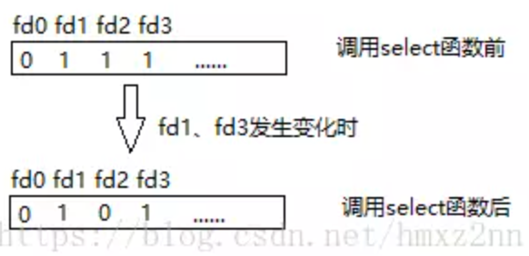
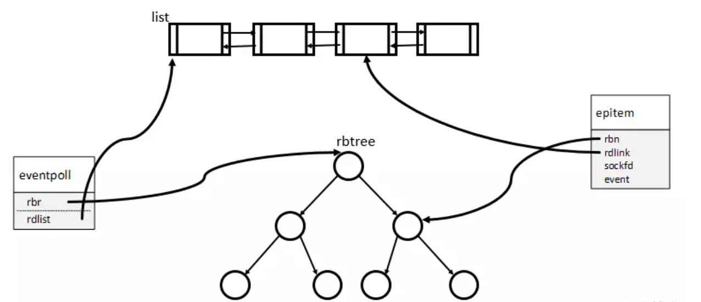

IO多路复用
1. Socket 基础
网络通信依赖 Socket 实现，内核对应用层提供 socket 接口供用户进程访问。

socket 维护了读写缓冲区，当使用操作系统提供的 write 写入数据时，需要先将数据从用户态拷贝到内核态的缓冲区，由操作系统发送。对端的网卡收到数据后，通过触发中断， 将网卡数据拷贝到内核的缓冲区，再拷贝到用户空间供进程读取。

对于传统的阻塞IO BIO（Blocking IO），一次阻塞读取的工作流程如下：
- 阻塞式读取 Socket，缓冲区中没有数据；
- 进程进入阻塞状态，从 CPU 的运行队列中出队，进入 Socket 的等待队列；
- 客户端的数据到达网卡，通过 DMA 将数据拷贝到缓存区，完成后发起中断；
- 系统响应中断，将进程从 Socket 的等待队列移动到 CPU 的运行队列，进程有机会获得 CPU 时间片。
2. IO多路复用
2.1 C10K
一个 TCP 服务器如何处理多个请求呢？直观的想法对于多个请求按顺序处理，由于使用 BIO，后一个请求需要等待前一个请求完成，这样的处理方式完全没有并发能力，对于多核 CPU 服务器而言导致大量的计算资源浪费。
另一个更合适的做法是使用一个线程处理连接，为每一个连接创建一个新线程来处理业务，这样处理能够运用多核特性。

但存在大量不活跃的长连接时，上述方案仍会出现问题，这是因为线程是很贵的资源：
- 线程的内存开销大。每一个线程内核需要为其分配 512K - 1M 的空间，如果系统中的线程数量过 10k，JVM 的内存也会被消耗殆尽，无法提供服务；
- 线程的切换成本高。操作系统的线程切换需要保存上下文，并执行系统调用，过高的线程数，可能导致线程切换的时间占比更高，使用多线程反而导致了性能的下降。
上述单机服务器实现大量连接的问题被称为 C10K 问题。
2.2 IO多路复用
IO 多路复用由此产生，其思想就是用一个线程，同时监听若干个 socket 连接是否可以执行 IO 操作，在单线程的情况下可以同时处理多个客户端请求。
IO 多路复用的核心优势在于处理更多的连接，在连接数不高的情景下，使用 IO 多路复用的性能可能比 BIO + 多线程的方式低。
Linux 上的 IO 多路复用有 select、poll、epoll 三个实现。
3. select
select 方法定义如下：
1 | int select(int max_fd, fd_set *readfds, fd_set *writefds, fd_set *exceptfds, |
其中 max_fd 是最大文件描述符的值，readfds、writefds 和exceptfds 分别对应读、写、异常条件的文件描述符，timeout 为超时时间。
Linux 的思想是一切皆文件，网络 IO 也被看成文件处理，会分配文件描述符。
fd_set 数据结构使用位图实现，默认大小为 1024，传给内核之后，内核根据 IO 完成情况给 fd_set 置位，并返回 IO 就绪的文件描述符个数。例如传入的 read_fds 的第 1、2、3 位为1，那么传入内核之后，内核会监听文件描述符 1、2、3 对应的 socket 连接并将 read_set 清零，如果此时 1、3 完成读 IO，那么 read_fds 的第 1、3 位将被设置为 1，select 函数的返回值为 2。

select 会阻塞直到有 IO 完成或者超时返回，在这期间，内核需要扫描整个 fd_set 才能判断是否有事件发生，效率低下。
fd_set 的使用涉及以下几个 API：
1 | int FD_ZERO(int fd, fd_set *fdset); // 将 fd_set 所有位置 0 |
例如完成一个 TCP 服务器，代码如下：
1 | // ... 初始化socket |
从上面的说明也可以看出 select 有以下缺点：
fd_set固定长度为 1024，最多监听 1024 个连接，增加连接需要改动内核源码重新编译；fd_set需要从用户态传入内核态。并且传入内核中都会被改写，不可重用，每次调用select前需要重新初始化；- 拿到结果后，需要遍历整个
fd_set，才能知道哪些连接可以处理。
4. poll
poll 的函数定义如下：
1 | int poll(struct pollfd *fds, unsigned int nfds, int timeout); |
其中 fds 是 pollfs 类型的数组，nfd 是 fds 数组的长度。
poll与 select 的功能基本相同，主要是解决了连接上限的问题，select 的其他缺点 poll 仍然具有。
限于篇幅，
poll的编程使用不在此处介绍，感兴趣的话可以阅读 《UNIX网络编程卷1》 6.11 小节。
5. epoll
5.1 epoll介绍
epoll 是对 select 和 poll 的改进，使用了三个函数，下面将依次介绍。
epoll_create
1 | int epoll_create(int size); |
epoll_create 会创建一个实例，并返回对应的文件描述符，参数 size 是 epoll 监听的文件描述符个数，并不是上限值，而是对内核初始化数据结构的一个建议。
内部的数据结构：
- 监听列表：所有要监听的文件描述符，用红黑树存储
- 就绪列表：所有就绪的文件描述符，使用链表存储

epoll_ctl
1 | int epoll_ctl(int epfd, int op, int fd, struct epoll_event *event); |
epoll_ctl 是事件注册函数，epfd 即 epoll_create 返回的文件描述符，fd 即要监听的文件描述符，event 是要监听的事件。
epoll_ctl 会将文件描述符 fd 添加到监听列表中，并监听事件 event，当 fd 上发生相应事件时，将 fd 添加到 epoll 实例的就绪队列上。
epoll_wait
1 | int epoll_wait(int epfd, struct epoll_event *events, int maxevents, int timeout); |
epoll_wait 会等待 epfd 上的 IO 事件，最多返回 maxevents 个事件，events 参数即从内核得到事件的集合。
5.2 触发形式
水平触发（LT，Level Trigger）：当文件描述符就绪时，会触发通知，如果用户程序没有一次性把数据读/写完，下次还会发出可读/可写信号进行通知。
边缘触发（ET，Edge Trigger）：仅当描述符从未就绪变为就绪时，通知一次，之后不会再通知。该模式效率更高，但必须使用非阻塞读写。
epoll 默认使用水平触发。
5.3 改进点
相较于 select 和 poll，epoll 有两个改进点：
epoll_wait在检测是否有事件发生时，只要检测链表是否为空即可，并将发生的事件复制到用户态；epoll对于每个描述符，只需要在epoll_ctl传递一次，之后epoll_wait不需要再次传递，这也大大提高了效率。
6. 对比
select、poll、epoll 的对比如下：
- 最大连接数：
select最大连接数为 1024，增加连接数需要改动内核；poll和epoll没有连接上限； - 文件描述符剧增的 IO 效率：
select和poll需要对所有连接进行扫描，在多连接时效率低；epoll只对活跃的连接进行扫描，性能不会大幅度下降，但面对大量活跃连接仍有性能问题； - 数据拷贝：
select和poll每次都需要向内核拷贝，epoll只需要拷贝一次。
三者的适用场景：
epoll：大量不活跃连接场景，限制 Linux 平台。select：少量活跃短连接场景，不同于epoll和poll，select有移植性。poll：大量活跃短连接场景。